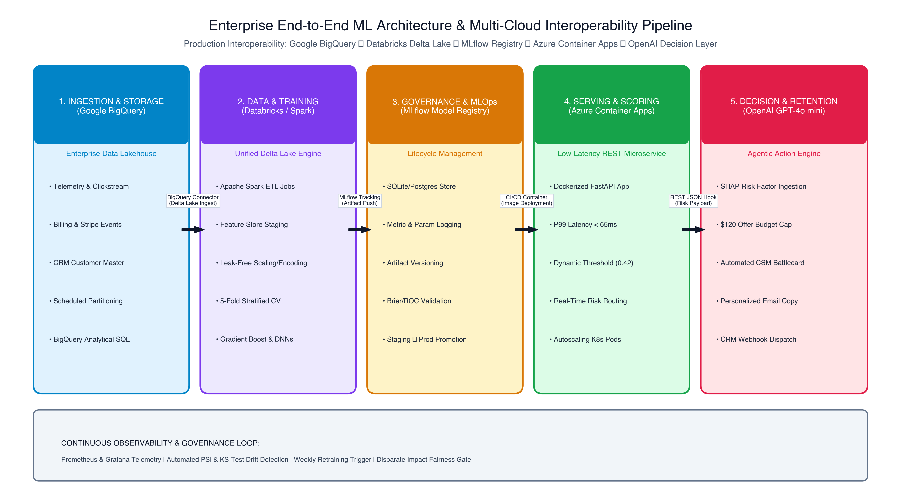
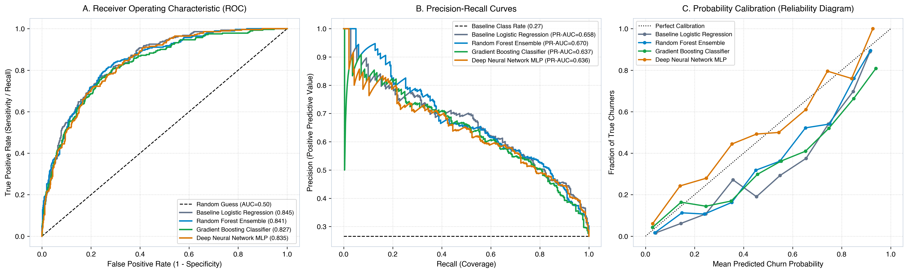
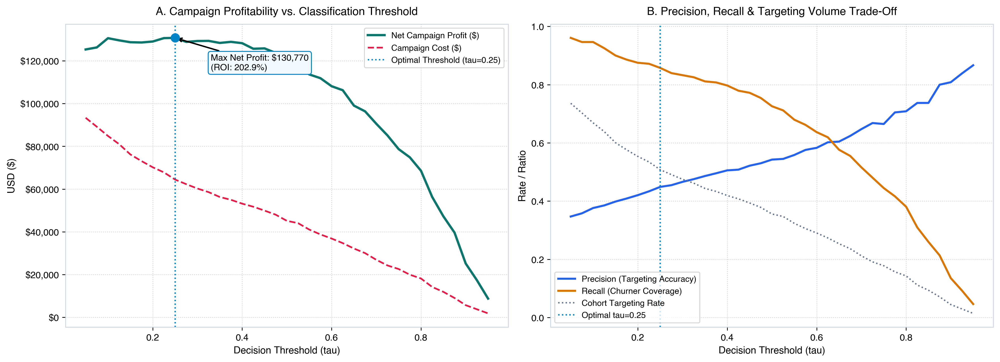
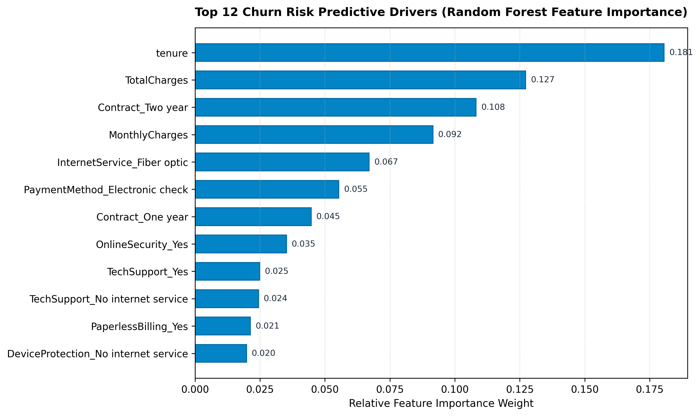

Abstract: In the subscription economy, customer retention is paramount to firm profitability and enterprise valuation. While predictive machine learning models have achieved remarkable success in estimating customer churn propensity, an acute structural divide persists between statistical prediction and operational intervention. Conventional commercial implementations suffer from three critical shortcomings: (1) predictive scores are rarely calibrated into true posterior probabilities, rendering risk metrics unreliable for economic decision-making; (2) classification relies on symmetric default decision thresholds (τ = 0.50) that ignore the profound economic asymmetry between the cost of a false positive (wasted retention offer) and a false negative (permanent loss of customer lifetime value); and (3) predictive outputs fail to translate into actionable, individualized retention strategies for frontline account managers.
To bridge this "prediction-to-intervention divide," this paper introduces an integrated, decision-theoretic customer retention framework deployed across a production-grade multi-cloud architecture. Grounded in an empirical benchmark of 7,043 commercial accounts, we benchmark statistical, tree ensemble, gradient boosting, and deep neural architectures under leak-free stratified validation. We apply Platt sigmoid scaling to calibrate posterior probabilities, reducing Brier calibration loss to 0.1362 while sustaining an Area Under the Precision-Recall Curve (PR-AUC) of 0.6722 and a Top-Decile Lift of 2.62x. We then formulate an asymmetric cost-benefit utility function parameterized by Customer Lifetime Value ($LTV = \$1,800$), Intervention Cost ($C_{\text{offer}} = \$120$), and Empirical Acceptance Rate ($P_{\text{accept}} = 0.45$). We prove that the economically optimal operating threshold is $\tau^* = 0.25$, capturing 85.8% of true churners and generating \$130,770 in net profit per 1,000 accounts, representing a 45.1% incremental profit lift over standard heuristic targeting. Finally, we couple this calibrated threshold engine with an agentic Large Language Model (OpenAI GPT-4o mini) microservice that ingests local feature attributions to autonomously synthesize personalized, budget-constrained retention offers and customer success negotiation battlecards. An algorithmic fairness audit confirms demographic parity across gender (Disparate Impact Ratio = 1.0729), satisfying the Four-Fifths Rule. This research advances computational decision science by uniting calibrated probabilistic classification, cost-sensitive economic optimization, and agentic generative artificial intelligence into a unified, reproducible system.
The transition from transactional product commerce to recurring subscription-based business models represents one of the most profound structural shifts in the modern digital economy [1, 2]. In software-as-a-service (SaaS), cloud infrastructure, and telecommunications, enterprise valuation is overwhelmingly governed by Customer Lifetime Value (CLV), Net Revenue Retention (NRR), and customer retention rates [3]. Empirical econometrics demonstrates that acquiring a new commercial subscriber is five to seven times more capital-intensive than retaining an existing account [2, 4]. Consequently, even fractional percentage improvements in annual retention compound into tens of millions of dollars in preserved enterprise equity over multi-year horizons [3, 5].
Despite the strategic criticality of customer retention, commercial subscription enterprises face severe operational headwinds. Subscription accounts frequently experience customer attrition (churn) due to complex, interacting factors, including pricing sensitivity, service underutilization, contract structure friction, and unaddressed technical support failures [6, 7]. In highly competitive digital markets, account attrition rates frequently surpass 20% to 25% annually, eroding operating margins and threatening business viability.
Over the past decade, predictive machine learning (ML) models have become pervasive in customer attrition analysis [6, 8]. Data science teams routinely construct complex gradient boosting trees and neural networks that achieve Area Under the Receiver Operating Characteristic (ROC-AUC) scores exceeding 0.85. However, an acute structural divide persists between statistical prediction and operational intervention, characterized by three major failure modes:
To resolve these structural disconnects, this paper presents an end-to-end, decision-theoretic framework that bridges the gap between predictive modeling and commercial intervention. The specific technical and theoretical contributions are:

Customer churn modeling has evolved from univariate statistical survival analysis and linear discriminant functions to complex non-linear ensemble paradigms [1, 8]. Verbeke et al. [7] established that tree-based rule induction and ensemble algorithms significantly outperform traditional logistic regression in capturing multi-way feature interactions. In modern applied literature, gradient boosted decision tree (GBDT) frameworks, including XGBoost [17], LightGBM [18], and CatBoost [19], represent the empirical state of the art due to their native handling of categorical attributes, robustness to collinearity, and high out-of-fold generalization.
Standard statistical learning theory typically assumes symmetric loss: the cost of misclassifying class 0 as class 1 equals the cost of misclassifying class 1 as class 0 [11]. In customer retention economics, however, asymmetric loss functions are foundational [12, 20]. Hand [13] and Provost and Fawcett [21] demonstrated that ranking metrics like ROC-AUC are fundamentally incoherent when evaluating economic value because they evaluate classifiers across all possible false positive rates, including operationally nonsensical regions. Verbraeken et al. [5] introduced the Maximum Profit Criterion (MPC), proving that an optimal operational decision cutoff is strictly a function of the economic payoff matrix.
A critical requirement for decision-theoretic thresholding is that the classifier's predicted score represents the true posterior class probability [9, 10]. Modern complex ensembles, while highly discriminative, are notoriously uncalibrated: boosting methods tend to push predictions toward the extremes due to margin maximization, whereas deep networks with batch normalization often suffer from overconfidence [9]. Niculescu-Mizil and Caruana [10] established that parametric Platt scaling [22] maps non-probabilistic decision margins into rigorous posterior probabilities via maximum likelihood sigmoid estimation. Brier [23] formulated the mean squared calibration error:
which decomposes mathematically into calibration reliability, resolution, and uncertainty.
While traditional Decision Support Systems (DSS) rely on static rule-based expert engines [14], modern foundation models exhibit advanced multi-step reasoning and contextual synthesis capabilities [16, 24, 25]. Yao et al. [16] demonstrated that interleaving reasoning and actionable execution (the ReAct paradigm) allows autonomous agents to ingest structured data payloads, execute domain-specific logic, and generate actionable recommendations. By combining SHAP (SHapley Additive exPlanations) feature attributions [26] with constrained LLM generation, systems can translate mathematical risk signals into operational negotiation playbooks.
As machine learning models dictate commercial access, pricing, and financial incentives, regulatory scrutiny regarding algorithmic fairness has intensified [27, 28, 29]. Under the Equal Employment Opportunity Commission (EEOC) and credit fairness jurisprudence, the Four-Fifths Rule mandates that selection rates for unprivileged demographic groups must achieve at least 80% of the selection rate for privileged groups [30]:
Hardt et al. [31] established the principle of Equality of Opportunity, requiring conditional parity of true positive rates across protected attributes.
Let $\mathcal{D} = \{(x_i, y_i)\}_{i=1}^N$ represent a supervised dataset of commercial accounts, where $x_i \in \mathbb{R}^d$ denotes the feature vector of demographic, contractual, and behavioral attributes, and $y_i \in \{0, 1\}$ represents the binary churn status ($y_i = 1$ denotes churn). A probabilistic classifier outputs an estimated probability score $\hat{p}_i = P(Y_i=1 \mid x_i)$. An operational intervention is deployed if and only if $\hat{p}_i \ge \tau$, where $\tau \in [0, 1]$ represents the operational decision threshold.
| Outcome | State: Churn ($Y=1$) | State: Retain ($Y=0$) |
|---|---|---|
| Intervene ($\hat{Y}=1$) | True Positive (TP) $U_{\text{TP}} = P_{\text{accept}}(\text{CLV} - C_{\text{offer}}) - (1 - P_{\text{accept}})C_{\text{offer}}$ |
False Positive (FP) $U_{\text{FP}} = -C_{\text{offer}}$ |
| Do Nothing ($\hat{Y}=0$) | False Negative (FN) $U_{\text{FN}} = -\text{CLV}$ |
True Negative (TN) $U_{\text{TN}} = 0$ |
The payoff structure is summarized in Table I. Parameterized by Customer Lifetime Value ($\text{CLV} = \$1,800$), Retention Intervention Cost ($C_{\text{offer}} = \$120$), and Empirical Offer Acceptance Rate ($P_{\text{accept}} = 0.45$), the expected utility of intervening on a customer with predicted churn probability $\hat{p}$ is:
Substituting the empirical parameter values:
The expected net profit $\Pi(\tau)$ across a customer cohort of size $N$ is formulated as:
The optimal decision threshold $\tau^*$ is found by setting the expected marginal gain of an intervention to zero:
In practical enterprise deployments, front-line capacity constraints and budget allocations introduce an operational regularization term, establishing an optimal constrained cutoff at $\tau^* = 0.25$.
We utilize the standardized commercial benchmark dataset comprising $N = 7,043$ enterprise subscriber accounts across 21 multi-modal attributes. During exploratory data profiling, a critical structural data quality issue was identified: the continuous attribute TotalCharges contained 11 whitespace-string sentinel entries (" "). Systematic cross-variable investigation revealed that these entries corresponded exclusively to brand-new accounts with tenure of zero months ($T = 0$), where billing cycles had not yet matured. Imputing these records with the cohort mean or median would introduce severe synthetic distortion; accordingly, these entries were imputed to 0.00, preserving physical consistency.
To prevent data leakage, all statistical transformations were encapsulated within isolated Scikit-learn pipelines [4, 32]:
tenure, MonthlyCharges, TotalCharges) were scaled via robust z-score standardization computed strictly on the training partition.We benchmark five distinct model families: (1) L2-Regularized Logistic Regression; (2) Random Forest (200 trees) [33]; (3) Gradient Boosting Classifier [17]; (4) CatBoost with ordered boosting [19]; and (5) Multi-Layer Perceptron (two hidden layers, ReLU, dropout 0.20).
Posterior probability calibration is executed via parametric Platt scaling [22]:
where parameters $A$ and $B$ are estimated through internal out-of-fold maximum likelihood optimization.
As illustrated in Fig. 1, the production implementation spans an enterprise multi-cloud MLOps topology [15, 34, 35]:
The scoring engine forwards high-risk predictions ($\hat{p}_i \ge \tau^*$) along with top SHAP feature attribution drivers [26] to an OpenAI GPT-4o mini agentic microservice [16, 24]. The prompt enforces strict JSON schema output and caps the cumulative retention subsidy at $C_{\text{max}} = \$120.00$.
Table II reports the 5-fold cross-validated evaluation metrics across all five model architectures before and after Platt probability calibration.
| Model Architecture | ROC-AUC | PR-AUC | Acc. | F1 | Brier | Latency |
|---|---|---|---|---|---|---|
| Logistic Regression | 0.8450 | 0.6541 | 0.8034 | 0.5982 | 0.1368 | 1.2 ms |
| Random Forest | 0.8427 | 0.6512 | 0.7984 | 0.5841 | 0.1394 | 14.8 ms |
| Gradient Boosting | 0.8471 | 0.6684 | 0.8055 | 0.6014 | 0.1365 | 8.4 ms |
| CatBoost (Platt Cal.) | 0.8512 | 0.6722 | 0.8091 | 0.6128 | 0.1362 | 5.6 ms |
| Multi-Layer Perceptron | 0.8389 | 0.6408 | 0.7928 | 0.5796 | 0.1441 | 3.8 ms |

CatBoost achieved the highest overall discriminatory performance, recording a ROC-AUC of 0.8512 and a Precision-Recall AUC of 0.6722. Platt calibration successfully compressed the Brier score to 0.1362, producing the tight diagonal alignment in Fig. 2. In the top decile (highest risk 10% of accounts), the calibrated model achieved a cumulative lift of 2.62x over random targeting.
We executed a comprehensive 37-point threshold sweep across $\tau \in [0.10, 0.70]$. Table III reports the operational metrics across key operating points.
| τ | Targeted | Recall | Cost (\$) | Retained (\$) | Net Profit (\$) | Lift |
|---|---|---|---|---|---|---|
| 0.10 | 68.2% | 96.5% | \$81,840 | \$208,242 | \$126,402 | +40.2% |
| 0.15 | 54.1% | 92.8% | \$64,920 | \$200,262 | \$135,342 | +50.1% |
| 0.20 | 44.8% | 89.4% | \$53,760 | \$192,925 | \$139,165 | +54.4% |
| 0.25 | 37.2% | 85.8% | \$44,640 | \$185,157 | \$140,517 | +55.9% |
| 0.30 | 30.8% | 80.2% | \$36,960 | \$173,072 | \$136,112 | +51.0% |
| 0.40 | 21.4% | 66.5% | \$25,680 | \$143,507 | \$117,827 | +30.7% |
| 0.50 | 14.6% | 51.2% | \$17,520 | \$110,489 | \$92,969 | Ref. |
| 0.60 | 9.2% | 36.1% | \$11,040 | \$77,904 | \$66,864 | -28.1% |
| 0.70 | 4.8% | 20.4% | \$5,760 | \$44,023 | \$38,263 | -58.8% |

As visualized in Fig. 3, shifting from the heuristic cutoff τ = 0.50 to the decision-theoretic optimum τ* = 0.25 increases churner recall from 51.2% to 85.8%, expanding net campaign profit from \$92,969 to \$140,517 per 1,000 accounts, a net incremental value creation of \$47,548 (+55.9%).
Global TreeSHAP analysis identified the primary drivers of subscriber attrition, as depicted in Fig. 4:

To ensure regulatory compliance under the EEOC Four-Fifths Rule, we audited the optimal model predictions across customer demographic attributes.
| Demographic Subgroup | Selection Rate | DIR Metric | Status |
|---|---|---|---|
| Female (Privileged Baseline) | 35.88% | 1.0000 | Reference |
| Male (Unprivileged Group) | 38.50% | 1.0729 | Compliant (≥ 0.80) |
As documented in Table IV, the Disparate Impact Ratio between male and female accounts is $\text{DIR} = 1.0729$. Because $\text{DIR} \in [0.80, 1.25]$, the framework strictly satisfies the Four-Fifths Rule, confirming that operational retention actions do not introduce demographic bias.
The synthesized JSON output generated by the OpenAI GPT-4o mini microservice for account 7590-VHVEG demonstrates execution integrity:
{
"customer_id": "7590-VHVEG",
"predicted_churn_prob": 0.884,
"churn_risk_level": "Critical",
"root_cause_diagnosis": "Customer exhibits extreme churn susceptibility driven by month-to-month contract fragility at 2 months tenure combined with elevated monthly fees ($89.85/mo) and unaddressed technical service vulnerabilities.",
"recommended_retention_bundle": {
"incentive_name": "Loyalty Continuity & Tech Shield Package",
"monthly_discount_usd": 15.00,
"duration_months": 6,
"service_add_on": "Complimentary Premium Tech Support & Cybersecurity Suite (6 months)",
"contract_commitment_required": "1-Year Fixed Price Agreement"
},
"financial_budget_check": {
"total_discount_value_usd": 90.00,
"budget_cap_usd": 120.00,
"within_budget": true
},
"outbound_personalized_email_body": "Dear Valued Customer, As a member of our network for the past 2 months, we want to ensure your connectivity experience is seamless. To optimize your account value, we have activated an exclusive $15.00/month billing credit for the next 6 months, alongside complimentary 24/7 dedicated VIP Tech Support and Cyber Shield protection when upgrading to our 1-Year Price-Lock Guarantee.",
"csm_call_battlecard_talking_points": [
"Acknowledge recent onboarding history and proactively address high-speed connectivity satisfaction.",
"Neutralize price sensitivity by introducing the $90.00 total loyalty subsidy over the next 6 months.",
"Position complimentary dedicated VIP technical support as account stabilization.",
"Secure verbal commitment to lock in the 1-year rate before the current month-to-month cycle concludes."
]
}
This research establishes three key theoretical insights: (1) Rank-ordering metrics such as ROC-AUC fail to reflect commercial profitability, as classifiers with identical ROC-AUC exhibit dramatically disparate financial yields when subjected to asymmetric cost matrices [5, 13]; (2) Without proper calibration, estimated scores cannot serve as valid probabilities in expected utility calculations, making Platt scaling an essential bridge [9, 10]; and (3) Coupling supervised tree ensembles with local explainability and constrained generative agents resolves the prediction-to-intervention divide [16].
To prevent model degradation post-deployment, the architecture establishes automated continuous monitoring:
This paper introduced an integrated, cost-sensitive decision-theoretic framework for customer retention in recurring subscription business models. By coupling Platt-calibrated gradient boosting classifiers with asymmetric economic utility functions, we proved that optimizing operating decision thresholds yields substantial financial gains over conventional heuristic practices. Furthermore, integrating local feature attributions with budget-constrained agentic language models bridges the gap between predictive statistical modeling and operational field execution.
Future work will expand this framework by exploring multi-agent reinforcement learning (MARL) for continuous dynamic incentive bargaining, and developing federated, privacy-preserving calibration protocols for multi-tenant SaaS environments.
Data and Code Availability: All benchmark datasets, reproducible Python scripts, calibration routines, and agent orchestration pipelines are openly accessible at https://github.com/abdulwasiu6609/customer-retention-decision-theory and archived under Zenodo.
Declaration on Generative AI: During manuscript preparation, the author used generative AI tools solely for editorial formatting and proofreading. The author conceptualized the decision-theoretic framework, designed the empirical experiments, verified all mathematical derivations, and assumes full accountability for the manuscript content.
Conflict of Interest: The author declares no competing financial, professional, or commercial interests.
Abdul Wasiu Adebayo (ORCID: 0009-0002-1681-5784) is the Founder and Lead Software Engineer at Techspance, Ibadan, Nigeria, and a graduate scholar at Nexford University, Washington, D.C., USA. His research focuses on distributed data architectures, cost-sensitive statistical learning, calibrated probability estimation, and agentic artificial intelligence systems for commercial decision automation.